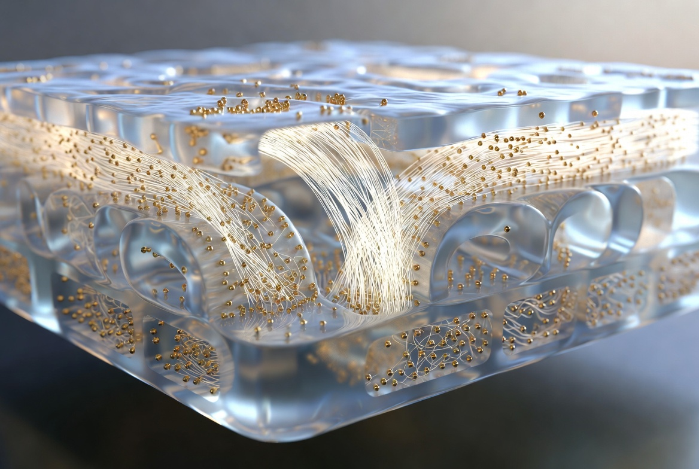

Recovered concept artwork
Unidentified Transparent Fiber Composite Concept
Purpose
An unlabeled rendering of a transparent structured block with curved fiber-like features and gold-colored inclusions. Descriptive archive title only.

Evidence and limits
Material composition, mechanism, function, authorship and relationship to existing designs are unknown. No manufactured sample, measured optical or mechanical behavior established.
Next review gate
Confirm original identity and source before assigning a technical description or performance claim.
Original artwork preserved as a visual concept.
Recovered artwork supplied from Mr. Peloquin's collaborative design collection; individual illustration authorship is unverified.